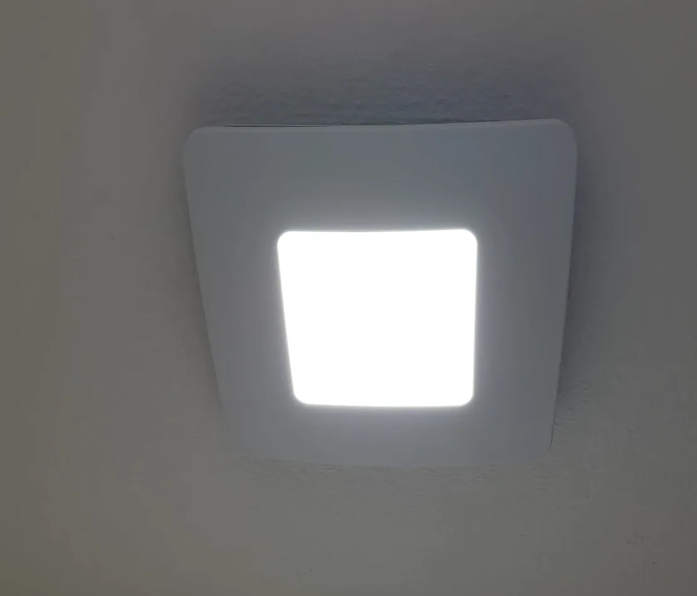
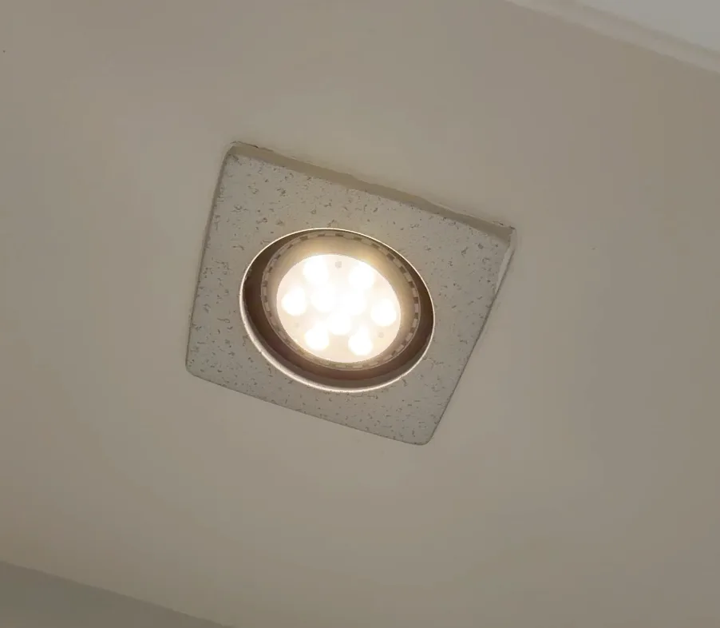

FV-0511VF1
WhisperFit DC
A straightforward quiet replacement when you do not need a light or automated controls.
- 50, 80, or 110 CFM selection
- Low-profile 5⅝-inch housing
- Flex-Z Fast installation bracket
- ENERGY STAR certified
Replace an aging exhaust fan with a compatible Panasonic model designed for room-side installation. Choose the airflow and features that fit your bathroom, from simple quiet ventilation to lighting, automatic moisture response, or Bluetooth audio.

Panasonic's low-profile WhisperFit DC models use the Flex-Z Fast installation bracket, which is designed to simplify retrofit work from below the ceiling. That can make them a strong choice when replacing an existing bathroom fan without attic access.

These are the Panasonic models worth comparing because each uses the Flex-Z Fast bracket or is specifically described by Panasonic for room-side installation. The exact model should be confirmed against the existing fan location before purchase.
A straightforward quiet replacement when you do not need a light or automated controls.
Adds a dimmable LED light and a low-power nightlight to the same quiet, low-profile fan platform.
Designed to activate ventilation when changing humidity and temperature conditions indicate condensation risk.
Combines bathroom ventilation with dual Bluetooth speakers, a dimmable LED, and a nightlight.
A fan with an LED, nightlight, sensor, or speaker may need different switching or wiring than the fan being removed. The nightlight on Panasonic's LED models requires separate wiring. Confirm the existing setup before ordering a feature-heavy model.
This service is for compatible fan replacement at an existing bathroom exhaust location using the existing wiring and duct.
Review the opening, ceiling space, duct connection, wiring, and controls.
Select the airflow and features that work with the bathroom and existing setup.
Remove the old unit, install the compatible replacement from the room side, and verify operation.
“Dustin came the same day to replace the bathroom fans. He did a great job, explained what he was doing and shared before/after pictures.”— Kavi Anand, Google review excerpt
Some Panasonic WhisperFit models are designed for room-side installation with the Flex-Z Fast bracket. The existing opening, ceiling space, duct, and wiring still determine whether the installation is a match.
Choose the standard WhisperFit DC for simple quiet ventilation, the LED version for integrated lighting, the condensation-sensing model for automatic moisture response, or Whisper Symphony if Bluetooth speakers are useful to you.
The Panasonic models shown here offer selectable airflow settings, but the right setting depends on the bathroom size and existing duct. That should be checked before final model selection.
A fan-only model may be simpler to match to existing controls. LED, nightlight, sensing, and audio features can change the wiring or switching requirements, so the current setup needs to be verified first.
This service focuses on replacing compatible fans at existing locations using the existing wiring and duct.
Tell Dustin what fan you have now and which features matter to you.